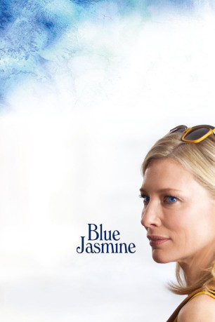
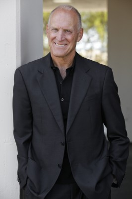
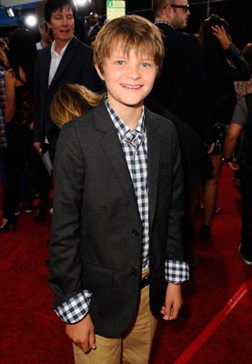
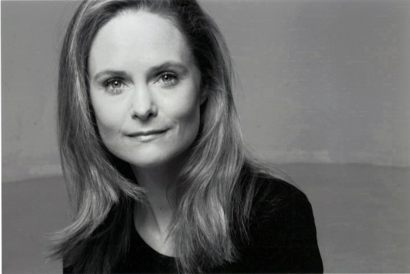
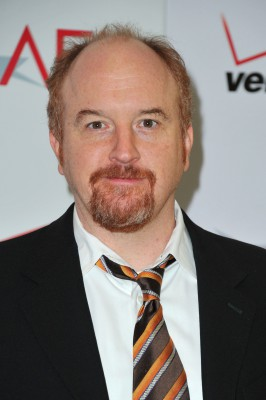

#566 Blue Jasmine
Auszeichnungen: 1 Oscars gewonnen für 2 Oscars nominiert 1 GoldenGlobes gewonnen 1 BAFTA-Awards gewonnen
 
 IMDB-Wertung: 7.3 / 10
IMDB-Wertung: 7.3 / 10  Metascore: 78
Metascore: 78 
Nach der Verhaftung ihres Gatten wegen Investmentbetrugs fliegt Society-Lady Jasmine aus ihrem sündteuren Manhattan-Luxus-Appartement und findet Unterschlupf in der kleinen Mietwohnung bei ihrer Adoptivschwester in San Francisco. Mangels Ausbildung und Computerkenntnissen findet sie keinen ihr genehmen Job. Als sie einen reichen und von ihr faszinierten Diplomaten kennen lernt, hofft das Nervenbündel auf einen Neuanfang.
Jahr: 2013
Dauer: 98 Minuten
FSK: 6
Land: USA Studio: Sony Pictures ClassicsTonspuren: DTS - ,
Untertitel:
Auflösung: 1080p (1920x800) Größe: 8939 MB
Genre: Drama
Regisseur:  Woody Allen
Woody Allen
Drehbuch: Woody Allen
Soundtrack:
Darsteller:
 Cate Blanchett als Jasmine
Cate Blanchett als Jasmine-  Richard Conti als Woman's Husband
- Glen Caspillo als Cab Driver
 Alec Baldwin als Hal
Alec Baldwin als Hal-  Charlie Tahan als Young Danny
- Annie McNamara als Jasmine's Friend Nora
 Sally Hawkins als Ginger
Sally Hawkins als Ginger- Daniel Jenks als Matthew
- Andrew Dice Clay als Augie
 Tammy Blanchard als Jasmine's Friend Jane
Tammy Blanchard als Jasmine's Friend Jane- Kathy Tong als Raylene
- John Harrington Bland als Hal and Jasmine's Friend
 Glenn Fleshler als Hal and Jasmine's Friend
Glenn Fleshler als Hal and Jasmine's Friend- Brynn Thayer als Hal and Jasmine's Friend
- Christopher Rubin als Hal and Jasmine's Friend
- Emily Bergl als Hal and Jasmine's Friend
-  Barbara Garrick als Hal and Jasmine's Friend
 Bobby Cannavale als Chili
Bobby Cannavale als Chili Max Casella als Eddie
Max Casella als Eddie- Ali Fedotowsky als Melanie
 Michael Stuhlbarg als Dr. Flicker
Michael Stuhlbarg als Dr. Flicker Alden Ehrenreich als Danny
Alden Ehrenreich als Danny- Colin Thomson als Chili's Friend
- Irit Levi als Dental Patient
- Shannon Finn als Jasmine's Friend Sharon
 Tom Kemp als Nat
Tom Kemp als Nat-  Louis C.K. als Al
 Peter Sarsgaard als Dwight
Peter Sarsgaard als Dwight- Jaden Alexander als Waiter , uncredited
 AnnaCorey als Jesse Pizza Restaurateur , uncredited
AnnaCorey als Jesse Pizza Restaurateur , uncredited Andy Arness als Pizzeria Patron , uncredited
Andy Arness als Pizzeria Patron , uncredited- Shelley K. Booker als Restaurant Couple , uncredited
- Patrick D Bridges als Business Man , uncredited
- Tiffany Connor als Socialite , uncredited
- Nestor Cuellas als Blue-Collar , uncredited
- Thomas Dalby als Restaurant Patron , uncredited
- Kenneth Edelson als Party Guest , uncredited
- Patrick Engler als Party goer , uncredited
- London Freeman als Traveler , uncredited
- Adrianne Grady als iPod Girl , uncredited
- Christopher Greene als Computer Student , uncredited
- Julietta Indelicato als Gaspare's Pizza House Waitress , uncredited
- Jeffrey W. Jenkins als Impeccably dressed party guest , uncredited
- Keenan Johnston als Pedestrian tourist , uncredited
- Kim Kopf als Flight Attendant Mary , uncredited
- Rick Lasquete als Party Guest , uncredited
- Annie Lore als Bar Patron , uncredited
- Yoli Mapp als Shopper , uncredited
- Tatiana Maricely als Shopper , uncredited
- Steven Jon Nichols als Party Guest , uncredited
Datei: X:\2013(A-F)\Blue Jasmine (2013, FSK6, 1920x800).mkv seit 09.03.2015
Festplatte: HD 2012(N-Z)-2013(A-H)
 Es gibt insgesamt 127 Filme in der Gruppe '2013(A-F)'
Es gibt insgesamt 127 Filme in der Gruppe '2013(A-F)'